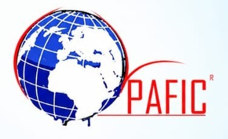

Du bio
à votre portée.
Le Partenaire Financier avec Christ (PAFIC) est une industrie privée camerounaise. C’est une entreprise citoyenne spécialisée dans la production et la distribution de savon de ménage et de toilette, laits de toilettes, glycérine, gel de cheveux, films plastique, d’huile raffinée et d’eau minérale.
Du produit primaire à la transformation
Produits locaux
Nous travaillons avec des matières premières issues de producteurs locaux. mmmmmmmmmmmmmmmmmmmmmmmmmmmmmm mmmmmmmmmmmmmmmmmmmmm
Qualité
Une attention particulière portée à la qualité et à la transformation. mmmmmmmmmmmmmmmmmmmmmmmmmm mmmmmmmmmmmmmmmmmmmmmmmm
Engagement
Une approche responsable et durable de l'agroalimentaire. mmmmmmmmmmmmmmmmmmmmmmmm mmmmmmmmmmmmmmmmmmmmmmmm
Nos valeurs
Qualité
Mettre à disposition des consommateurs des produits répondant à leurs besoins.
Innovation
Développer et diversifier continuellement les activités et les produits.
Production locale
Participer au développement de la production et de la transformation locales.
Proximité
Proposer une offre adaptée aux réalités et aux besoins du marché.